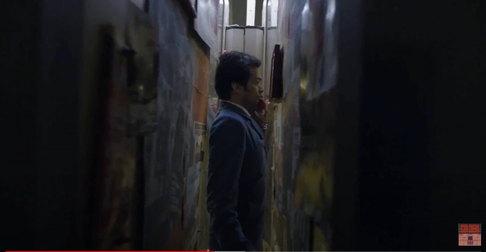

당신의 사랑은 어떤색인가요? 영화 ‘Mood Indigo’
‘무드 인디고’는 공드리의 장기인 미장센의 배치가 정점에 달한 작품이다.
1시간 30분 가량의 짧은 영상 속에서 공드리 특유의 영상미를 함뿍 느낄 수 있다.
환상일까? 현실일까?
주인공인 사업가 콜랭은 클로에라는 여인에게 첫눈에 반해 사랑에 빠지게 된다.
도로 위에서 드라이브를 하는 여느 연인들과는 다르게 그들은 구름을 타고 하늘 위를 부유하며 서로에게 빠져든다.
서로에게 사랑을 느끼는 순간에 하늘로 올라가 도시를 바라보는 찰나의 장면에서, 샤갈의 ‘도시위에서’라는 작품이 생각났다.
관람자들에게는 비현실적인 장면이지만 주인공인 두 사람은 현실인 것 마냥 아무렇지 않다.
Marc Chagall[Over the Town]
감정의 시각화
콜랭과 클로에의 사랑은 활활 타올랐던 열기가 누그러지며 온화해져 결국 결혼까지 성공하게 된다.
결혼식을 마치고 퇴장을 하는 콜랭과 클로에는 물속을 헤엄치듯이 앞으로 나아가는데,
결혼 직후 설레고 붕 뜨는 듯한 연인의 감정을 공드리는 물속에서 걷는 것으로 연출했다.
또한 두 사람이 신혼여행을 떠나는 길은 지나가는 자리마다 무지갯빛을 띤다.
새로운 시작과 서로에게 향하는 사랑은 빛과 색으로 가득하고 행복할 것이라는 기대감이 표현된 듯 하다.
하지만 시간이 흐르며 둘의 삶은 변하게 된다.
클로에는 폐에서 수련이 자라는 병에 걸려 잦은 통증에 시달리게 되고, 콜랭은 그의 전 재산을 클로에의 쾌유에 쏟게 된다.
콜랭이 느끼는 부담감은 집을 비추는 햇빛이 사라지며 점점 어두워지는 것, 갑자기 그를 중심으로
세상이 오그라드는 것 등을 통해 시각적으로 표현된다. 그의 불안 또한 가만히 균형을 잡고 서있기조차 힘들게
점점 기울어지는 집을 통해서도 비유적으로 비추어진다.

색으로 표현되는 사랑의 흐름
클로에 병의 치료방법은 다른 꽃들을 주위에 두어 수련을 시들게 하는 것이다.
꽃이 갓 피어날때는 화려한 빛을 보여주지만, 점점 시들어가 색을 잃는 것처럼 클로에와 콜랭의 삶은
점점 비극으로 치닫으며 전체적인 영화의 색은 처음과는 전혀 다르게 흑백으로 변모한다.
건물도 하늘도, 빛을 잃은 잿빛만을 띄며 두 사람의 주위에는 초반과 같은 반짝임은 보이지 않는다.
공드리는 전체적인 영화의 흐름을 색과 함께 했다. 영화 연출 중 가장 돋보이는 부분이다.
무드 인디고라는 제목과 알록달록한 포스터는 그저 이 영화를 아름다운 사랑이야기쯤으로
생각하게 만들지만 마냥 달콤한 사랑이야기는 아니다. 처음 서로에게 불타는 사랑을 느꼈던 두 사람의 감정처럼
비비드한 색감과 영상으로 영화는 시작했지만, 끝으로 갈수록 영화는 점점 색을 바래간다.
‘무드 인디고’는 공드리의 장기인 미장센이 정점에 달한 작품이다.
남녀 주인공의 심리가 ‘비비드-파스텔-모노톤-흑백’에 이르는 색의 흐름으로 표현되어,
사랑이라는 추상적인 개념이 눈으로 보이는 놀라운 경험을 선사하기도 한다.
지나친 영상미와 미장센이 극의 흐름을 방해한다는 평도 있지만,
공드리의 환상의 세계에서 사랑이 꽃처럼 짧은 순간에 반짝이다 부서지며
빛을 잃고 사라져가는 비극을 아름다운 영상미와 함께 보여주어
스토리와 영상이 서로를 대비시켜 영화의 메시지가 더 와닿은 작품이었다.
"모든 위대한 아이디어는 바보같은 것과 같은 경계에 놓여있다."
미셸 공드리(Michel Gondry)